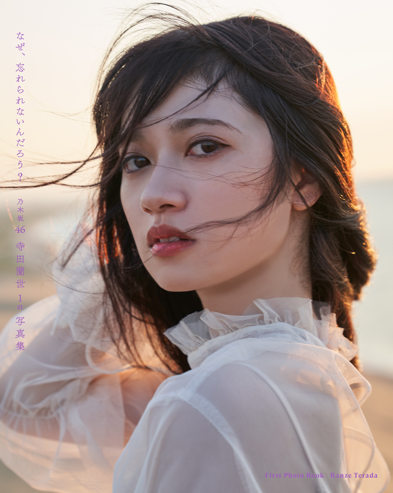
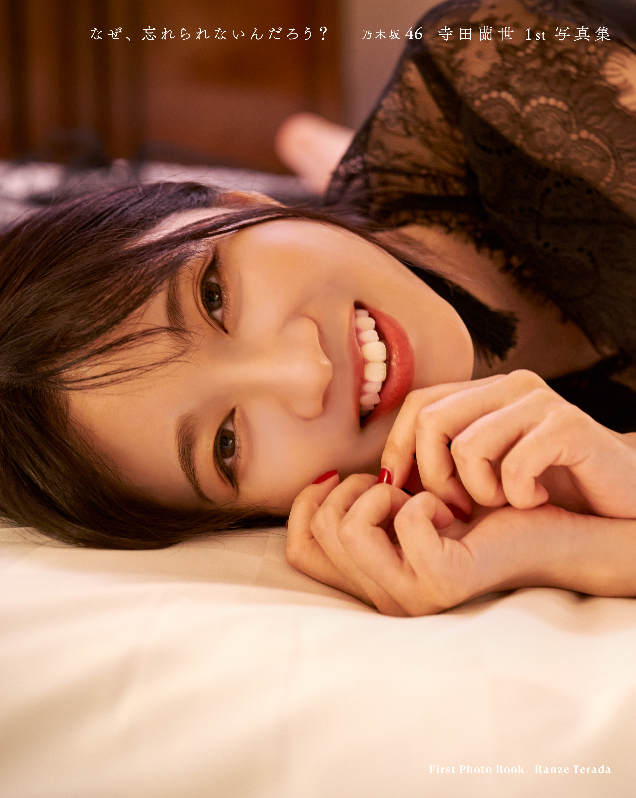
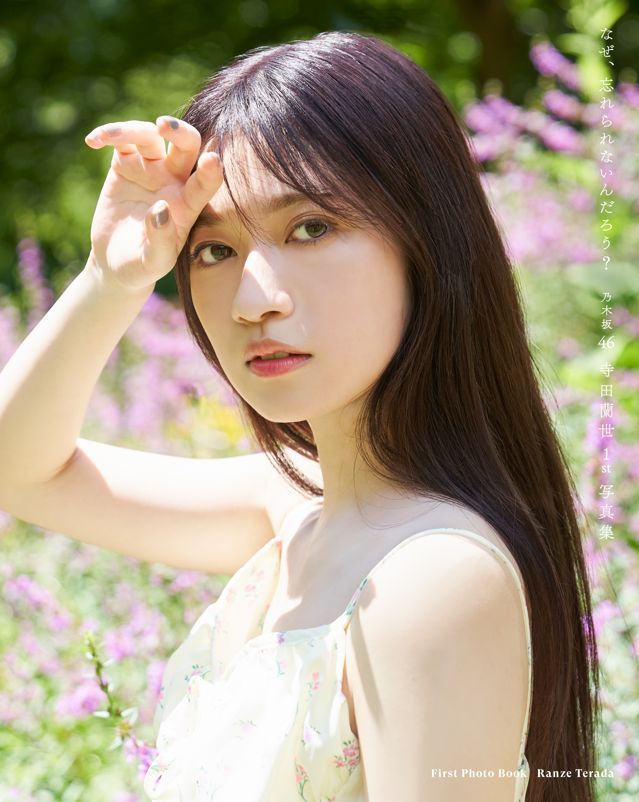
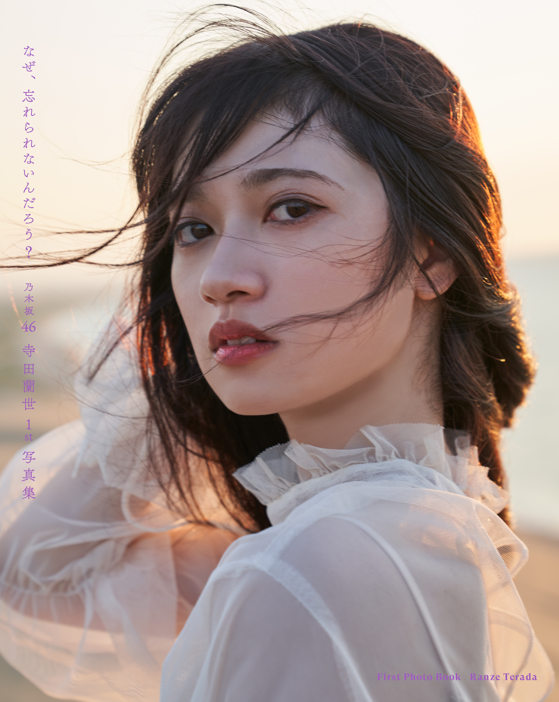
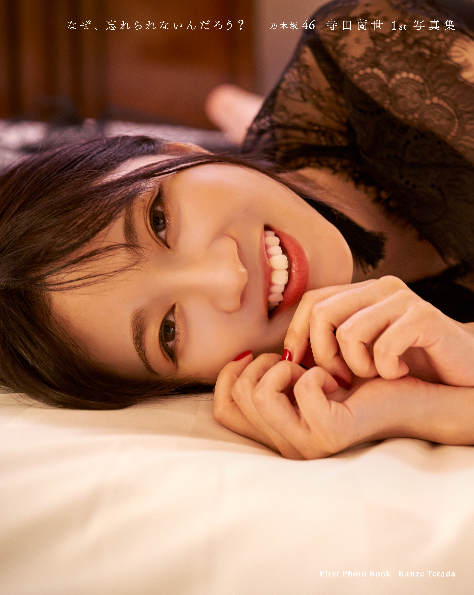
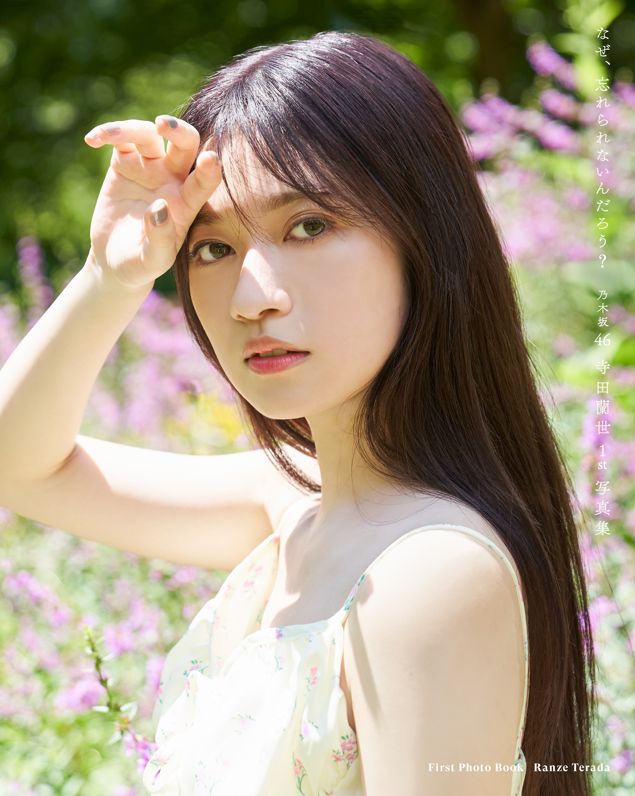

2021/0929Wedお知らせがあります。✨
本日表紙とタイトルが解禁となりました。☺️✨
少しずつ形になっているのが安心するような
このまま私だけの思い出として閉じ込めてしまいたいようか毎日色んな気持ちが湧いてきてしまいます。
でも、皆さんの元に届くことが完成だと思うので
11月9日無事に届くようにと毎日願っております。
発売されたらみんなで鑑賞会したいくらい
このページの撮影中はこんなことがあったんだよとか
お洋服にはこんなこだわりがあったんだよとか
今までの思い出話とか
卒業アルバムを同級生の友達と見て盛り上がるように写真集をみて思い出を共有したいです。
とにかく今は凄いドキドキしてます。
是非沢山支えてくれると心強いです。
本当に珍しくドキドキしています。
3タイプの表紙どうですかね。？
皆さんのお気に入りはありましたか。？
私は紙でひと足お先に見させていただいたのですが
この画質では伝わりきらない
紙だからこその良さがありました。
また画像とは違う雰囲気を感じられました。
実は裏表紙も凄くいいんですよー。✨
写真集公式Twitter
少しずつ形になっているのが安心するような
このまま私だけの思い出として閉じ込めてしまいたいようか毎日色んな気持ちが湧いてきてしまいます。
でも、皆さんの元に届くことが完成だと思うので
11月9日無事に届くようにと毎日願っております。
発売されたらみんなで鑑賞会したいくらい
このページの撮影中はこんなことがあったんだよとか
お洋服にはこんなこだわりがあったんだよとか
今までの思い出話とか
卒業アルバムを同級生の友達と見て盛り上がるように写真集をみて思い出を共有したいです。
とにかく今は凄いドキドキしてます。
是非沢山支えてくれると心強いです。
本当に珍しくドキドキしています。
3タイプの表紙どうですかね。？
皆さんのお気に入りはありましたか。？
私は紙でひと足お先に見させていただいたのですが
この画質では伝わりきらない
紙だからこその良さがありました。
また画像とは違う雰囲気を感じられました。
実は裏表紙も凄くいいんですよー。✨
写真集公式Twitter
https://twitter.com/ranze1st?s=21
随時、Twitterの方でお知らせしていますので
是非そちらで詳細は追って頂けると嬉しいです。
オフショットもこれから更に載せますので
是非是非ー。☺️✨



全部雰囲気が違くて
私自身、全てお気に入りではありますが
中身はもっともっと1ページ1ページが濃ゆくて
どのページをめくっても
私らしさ全開だと思います。
まだ解禁前ということで詳しくは言えないのですが、、、
私が写真集をみて思った事は
え、蘭世ってこんなに。！！！！！！
って自分でもびっくりするくらい
自分の幅を改めて知れた気がしました。
どの場面も心からリラックスしていて
カメラにというより本当に大切な人と旅しているかのような表情をしていました。
1人でも多くの方とこの気持ちを共有したいです。
是非、11月9日発売
一緒に毎日盛り上がってくれたら嬉しいです。☺️✨
随時、Twitterの方でお知らせしていますので
是非そちらで詳細は追って頂けると嬉しいです。
オフショットもこれから更に載せますので
是非是非ー。☺️✨



全部雰囲気が違くて
私自身、全てお気に入りではありますが
中身はもっともっと1ページ1ページが濃ゆくて
どのページをめくっても
私らしさ全開だと思います。
まだ解禁前ということで詳しくは言えないのですが、、、
私が写真集をみて思った事は
え、蘭世ってこんなに。！！！！！！
って自分でもびっくりするくらい
自分の幅を改めて知れた気がしました。
どの場面も心からリラックスしていて
カメラにというより本当に大切な人と旅しているかのような表情をしていました。
1人でも多くの方とこの気持ちを共有したいです。
是非、11月9日発売
一緒に毎日盛り上がってくれたら嬉しいです。☺️✨
今日も1日お疲れ様でした。
短いブログではありますがまた更新させてください。
最近、コメントが多くて嬉しいです。
いつも見させてもらってます。☺️✨
メンバーのブログも見てるのですが
自分の名前が上がると嬉しいものですねー。✨
お誕生日沢山のお祝い心から感謝しております。
出逢ってくれて支えてくれて愛してくれてありがとうございます。
私は幸せ者です。☺️✨
本当に元気もらえるのー。☺️✨
2021/09/29 18:36
コメント(691)
ポストカード頑張って全種類集めます！
蘭世はずっと自慢の推しです。
自分はアンダラの当選でドキドキです笑
蘭世推しとして何より行かなきゃならないので！
明日も適度に頑張ろう！
蘭世はずっと自慢の推しです。
自分はアンダラの当選でドキドキです笑
蘭世推しとして何より行かなきゃならないので！
明日も適度に頑張ろう！
お疲れ様(^^)
特に内容もないんだけどコメントしてみる。
今日仕事してて、蘭世さんから適度に頑張ろうってきて、それまで一杯一杯だったけど、そのおかげで少し力抜けて気楽になった。
ありがとうー！！
蘭世さんから来る適度に頑張ろうが、本当に癒しになってるわ最近。
それだけで何か1日頑張れるよ。
そんなこんなで忙しい日も続くと思うけど、体調に気をつけてね！
特に内容もないんだけどコメントしてみる。
今日仕事してて、蘭世さんから適度に頑張ろうってきて、それまで一杯一杯だったけど、そのおかげで少し力抜けて気楽になった。
ありがとうー！！
蘭世さんから来る適度に頑張ろうが、本当に癒しになってるわ最近。
それだけで何か1日頑張れるよ。
そんなこんなで忙しい日も続くと思うけど、体調に気をつけてね！
ひょろひょろくん通信で今日は沢山蘭世ちゃんを見れて良かったわあ❣️ 疲れが吹き飛ぶのよ♪ ポストカードどれも可愛いかったよ
のぎ動画では「ブランコ」のMVが配信されたし！
正直この頃の蘭世ちゃんをまだちゃんと見つける事が出来てなかったなあ
次第に蘭世ちゃんの魅力を沢山知る事になったのだよ
蘭世
こんばんは！
ポストカードど解禁になりましたね！
どれも綺麗で可愛くて切なくて素敵な写真ばかりですね
どれも好きですよ
写真集が出たらミーグリで1番好きなポストカード伝えるよ！
お試し中のスタッフの皆様が予約してくれて嬉しいね
みんな蘭世ちゃんが好きなんだね
いいスタッフさん達で嬉しいです！
公式Twitterの動画も見たよ！
ひょろひょろくんも一緒に選んだんだね
いつも一緒で羨ましいです笑
店舗特典も気になります
いろいろと解禁されてるのが楽しいですよ！
モバメもありがとう！
蘭世ちゃんのモバメが来ると嬉しいです！
改めて蘭世ちゃんの事をいろいろと教えてほしいです
好きな食べ物とかどこでもいいので改めて教えてほしいな
蘭世ちゃん適度に頑張ろうろうろうー
あと楽しむ事忘れないでね！
明日もよき日でありますように
こんばんは！
ポストカードど解禁になりましたね！
どれも綺麗で可愛くて切なくて素敵な写真ばかりですね
どれも好きですよ
写真集が出たらミーグリで1番好きなポストカード伝えるよ！
お試し中のスタッフの皆様が予約してくれて嬉しいね
みんな蘭世ちゃんが好きなんだね
いいスタッフさん達で嬉しいです！
公式Twitterの動画も見たよ！
ひょろひょろくんも一緒に選んだんだね
いつも一緒で羨ましいです笑
店舗特典も気になります
いろいろと解禁されてるのが楽しいですよ！
モバメもありがとう！
蘭世ちゃんのモバメが来ると嬉しいです！
改めて蘭世ちゃんの事をいろいろと教えてほしいです
好きな食べ物とかどこでもいいので改めて教えてほしいな
蘭世ちゃん適度に頑張ろうろうろうー
あと楽しむ事忘れないでね！
明日もよき日でありますように
蘭世さん、お疲れ様です。
今日もメールに、ひょろひょろくん通信ありがとう。
ひょろひょろくんと一緒にポストカード6種をおさらいしたけど
それぞれに違う良さがあって一番は選べないです。
本当にどの絵柄も良きです！！
ひょろひょろくんと蘭世さんのツーショットは手に入れたいなぁ。
ひょろひょろくんと一緒に蘭世さんが決めた絵柄だから尚更です。
ポストカードを選んでいる蘭世さんの動画も蘭世さんが
いろいろ考えながら選んでくれているのが、伝わって凄く嬉しくなりました。
だからこそできるだけ貢献できるように頑張りますね。
本日、10月4日は天使の日らしいです。
朝からポストカード解禁する情報がひょろひょろくん通信できたりと
月曜日から嬉しいことの連続で
蘭世さんが天使に感じられた日でした。
今日も幸せだったよ、ありがとう。
明日からもまだ少し残暑が続くようです。
水分補給を忘れずに、楽しくいこうね。
明日も適度に、えいえいおーー。！！
明日もいい日だ
またね。
今日もメールに、ひょろひょろくん通信ありがとう。
ひょろひょろくんと一緒にポストカード6種をおさらいしたけど
それぞれに違う良さがあって一番は選べないです。
本当にどの絵柄も良きです！！
ひょろひょろくんと蘭世さんのツーショットは手に入れたいなぁ。
ひょろひょろくんと一緒に蘭世さんが決めた絵柄だから尚更です。
ポストカードを選んでいる蘭世さんの動画も蘭世さんが
いろいろ考えながら選んでくれているのが、伝わって凄く嬉しくなりました。
だからこそできるだけ貢献できるように頑張りますね。
本日、10月4日は天使の日らしいです。
朝からポストカード解禁する情報がひょろひょろくん通信できたりと
月曜日から嬉しいことの連続で
蘭世さんが天使に感じられた日でした。
今日も幸せだったよ、ありがとう。
明日からもまだ少し残暑が続くようです。
水分補給を忘れずに、楽しくいこうね。
明日も適度に、えいえいおーー。！！
明日もいい日だ
またね。
蘭世ちゃん、お疲れ様！
今日も沢山のメールを送ってくれて有難う！
ポストカードの絵柄解禁見ましたよー！
どれも蘭世ちゃんらしさがちゃんと詰まっているから全６種類をそろいたと思います。
ちなみに個人的に一番好きなのはひょろひょろくんとのツーショットです。^-^
乃木坂お試し中のスタッフさんも写真集を予約してくれたんですね！
蘭世ちゃんが沢山の人から愛されているのはファンとしてすごく嬉しいです^-^
私も蘭世ちゃんに予約したよーと早く報告がしたいです。
今日メールで送られてきた写真は確かに変んな角度だけどまだ見たことが無かったので嬉しいです。
明日も大変な1日ですがお互い無理せずに適度に頑張ろうね！
えいえいおーーーー！^-^
今日も沢山のメールを送ってくれて有難う！
ポストカードの絵柄解禁見ましたよー！
どれも蘭世ちゃんらしさがちゃんと詰まっているから全６種類をそろいたと思います。
ちなみに個人的に一番好きなのはひょろひょろくんとのツーショットです。^-^
乃木坂お試し中のスタッフさんも写真集を予約してくれたんですね！
蘭世ちゃんが沢山の人から愛されているのはファンとしてすごく嬉しいです^-^
私も蘭世ちゃんに予約したよーと早く報告がしたいです。
今日メールで送られてきた写真は確かに変んな角度だけどまだ見たことが無かったので嬉しいです。
明日も大変な1日ですがお互い無理せずに適度に頑張ろうね！
えいえいおーーーー！^-^
こんばんは〜！
ひょろひょろくん通信に、メールに、今日も一日楽しい時間をありがとうー！
らんぜちゃんの話題で盛り上がれるのとっても嬉しい〜！
今日はどんな1日だったかなー？
いっぱい笑顔の時間があったなら何よりだな〜と！
こないだもお話したんだけど、最近はらんぜちゃんに感化されて素敵な柄シャツ探しをしていて〜！
なかなか都内に遊びに行くのは億劫なので、ネットショッピングでー！と思っていたんだけど、やっぱりビビっと直感が働いたり素敵な出会いというのはなかなか無いものだよねー！
そうそう！少し前かなー？表参道を通る機会があって。
Alexander McQueenのお店の前を通った時、赤と白のドレスが並んでいて らんぜちゃんが着たらめちゃくちゃ似合うだろうなー！ってすごくワクワクしました〜！
らんぜちゃんが着たらめちゃくちゃ似合うだろうなー！ってすごくワクワクしました〜！
赤色って情熱的だー！っていうのもあるけど、すごく華やかで温かみのある素敵な色だよねー！と思いますー！
写真集でも素敵なドレス着てるかなー？わくわくします〜
そういえば東京ドーム公演の日程が決まりましたねー！
出演してくれるのかな？僕らは出演欲しいなー！と思っているのですが！
夢の舞台に2度も立てるなんて本当にすごいことだからねー！
それにそれに！らんぜちゃんにとってのスーパースター、マイケル・ジャクソンさんにも並ぶじゃないー？
だから本当にステージに立って欲しくてー！！
今日は夜も遅いので！こんなところで！
頑張っていると思うから頑張ってー！とは言えないけど、一緒に頑張っていこー！
ではではまた遊びに来ますねー！
らんぜちゃんのポストカード選びめちゃくちゃ可愛かったよ〜！
早く届かないかなー！楽しみです
ひょろひょろくん通信に、メールに、今日も一日楽しい時間をありがとうー！
らんぜちゃんの話題で盛り上がれるのとっても嬉しい〜！
今日はどんな1日だったかなー？
いっぱい笑顔の時間があったなら何よりだな〜と！
こないだもお話したんだけど、最近はらんぜちゃんに感化されて素敵な柄シャツ探しをしていて〜！
なかなか都内に遊びに行くのは億劫なので、ネットショッピングでー！と思っていたんだけど、やっぱりビビっと直感が働いたり素敵な出会いというのはなかなか無いものだよねー！
そうそう！少し前かなー？表参道を通る機会があって。
Alexander McQueenのお店の前を通った時、赤と白のドレスが並んでいて
赤色って情熱的だー！っていうのもあるけど、すごく華やかで温かみのある素敵な色だよねー！と思いますー！
写真集でも素敵なドレス着てるかなー？わくわくします〜
そういえば東京ドーム公演の日程が決まりましたねー！
出演してくれるのかな？僕らは出演欲しいなー！と思っているのですが！
夢の舞台に2度も立てるなんて本当にすごいことだからねー！
それにそれに！らんぜちゃんにとってのスーパースター、マイケル・ジャクソンさんにも並ぶじゃないー？
だから本当にステージに立って欲しくてー！！
今日は夜も遅いので！こんなところで！
頑張っていると思うから頑張ってー！とは言えないけど、一緒に頑張っていこー！
ではではまた遊びに来ますねー！
らんぜちゃんのポストカード選びめちゃくちゃ可愛かったよ〜！
早く届かないかなー！楽しみです
プログ更新、お疲れ様、ありがとうね。本当に写真集の発売日が楽しみやな。今年もオラの誕生日をモバイルメールで祝ってくれてありがとうね。今月、10月の26日から28日に開催する乃木坂46、アンダーライブと11月の20日と21日に開催が決まった真夏の全国ツアーライブで東京ドーム公演には、蘭々のためにも本当に必ず、絶対にライブ会場に行きたいからオラをライブチケット当選と座席は、どこでも構わないからオラをライブ会場の座席の中まで導いてね。よろしくね。
こんばんは！
今日のモバメすごくテンションが高かったですね！
午後から大学とバイトと忙しいかったので、ギアが入りました！ありがとうございます！
それとそれとポストカードが公開されましたね！
Twitterのどれにするか選んでる動画可愛かったなぁ。蘭世さんが選んでる光景がすごく微笑ましかったです。
書店限定の方もすごく楽しみです！
僕の1番のお気に入りはひょろひょろ君とのツーショット写真です。
2人で仲良く並んでるのが微笑ましい！
既に現在の段階でも写真集作れるんじゃないかってくらい豪華です！もうワクワクが止まりません。
東京ドームの日程も発表されましたね！
蘭世さんは参加するのでしょうか？ライブに応募するので蘭世さんが参加してくれたら嬉しいなぁって思ってます！
明日も適度に頑張りましょう！
おやすみなさい。
今日のモバメすごくテンションが高かったですね！
午後から大学とバイトと忙しいかったので、ギアが入りました！ありがとうございます！
それとそれとポストカードが公開されましたね！
Twitterのどれにするか選んでる動画可愛かったなぁ。蘭世さんが選んでる光景がすごく微笑ましかったです。
書店限定の方もすごく楽しみです！
僕の1番のお気に入りはひょろひょろ君とのツーショット写真です。
2人で仲良く並んでるのが微笑ましい！
既に現在の段階でも写真集作れるんじゃないかってくらい豪華です！もうワクワクが止まりません。
東京ドームの日程も発表されましたね！
蘭世さんは参加するのでしょうか？ライブに応募するので蘭世さんが参加してくれたら嬉しいなぁって思ってます！
明日も適度に頑張りましょう！
おやすみなさい。
蘭世さんおはようこんにちはこんばんは！
今日も1日お疲れ様でした^ ^
変な角度からでも可愛いですねー。
ポストカード解禁おめでとうございます！！
全種類衣装が違うのはメンバーの中でも初じゃないですか？？
表情や雰囲気もそれぞれ違って全部お気に入りです。^ ^
ひょろひょろくんいるのも嬉しい。！
ロケ地巡りに全種類持っていきたいなー。^ ^
スタッフさん方の愛を感じますね。拓さんにはお渡しするのでしょうか^ ^
やはり全国ミーグリでお話しするチャンスは失われてしまったみたいです、、。
抽選なので何も言えませんが、なにか寂しいです。
画面越しでも今までの感謝とか、写真集の感想をお伝えしたかったです。
代わりに手紙を沢山書きますね。
気持ちだけでも届きますように、、。
時が経つのは早いけれど、蘭世さんのおかげで濃ゆい毎日がおくれています。^ ^ ありがとうー。
明日も蘭世さんに沢山の幸せが訪れますようにー
適度にえいえいおー
今日も1日お疲れ様でした^ ^
変な角度からでも可愛いですねー。
ポストカード解禁おめでとうございます！！
全種類衣装が違うのはメンバーの中でも初じゃないですか？？
表情や雰囲気もそれぞれ違って全部お気に入りです。^ ^
ひょろひょろくんいるのも嬉しい。！
ロケ地巡りに全種類持っていきたいなー。^ ^
スタッフさん方の愛を感じますね。拓さんにはお渡しするのでしょうか^ ^
やはり全国ミーグリでお話しするチャンスは失われてしまったみたいです、、。
抽選なので何も言えませんが、なにか寂しいです。
画面越しでも今までの感謝とか、写真集の感想をお伝えしたかったです。
代わりに手紙を沢山書きますね。
気持ちだけでも届きますように、、。
時が経つのは早いけれど、蘭世さんのおかげで濃ゆい毎日がおくれています。^ ^ ありがとうー。
明日も蘭世さんに沢山の幸せが訪れますようにー
適度にえいえいおー
ポストカードどれもめっちゃ好きです！
あんなに色んな表情見せてくれるのも蘭世ちゃんだからこそやなーと思います
ひとまずポストカードコンプできるように、もうちょっと予約追加しまーす笑
撮影地巡りするときは絶対持って行くね！
あんなに色んな表情見せてくれるのも蘭世ちゃんだからこそやなーと思います
ひとまずポストカードコンプできるように、もうちょっと予約追加しまーす笑
撮影地巡りするときは絶対持って行くね！
今日もお疲れ〜
やばい今日はめちゃ眠い笑
ポストカード見たよー
バリエーションが多くて、色々な表情が満遍なく見れて良いですね^_^
しっかりとひょろひょろくんも写ってるのもあった〜笑
ネットショップ系は全ポストカードのパターン予約済みなので、あとはTSUTAYAの実店舗の予約だけかな？
もうすぐ1ヶ月前なので予約行かなきゃ！
メッセージも楽しみにしてます♪
蘭世～
おはよう～よう～よう～
元気か？昨日お疲れ！
笑、私のマネつまらんかも
たぶん蘭世はわかる
台北の誠（チェン）です
写真集twitter見た！
ひょろひょろくんも手伝った！
笑、やっぱあの一枚やろね ^_^
そいえば、
昨日は世界動物の日だったそう
知ってたけど、忘れた
たまたま蘭世に
レッサーパンダを見せた
私にひょろひょろくんと
らくだくんも動物だとおもってる
変な仮想かも～笑
ひょろひょろくんをなでたい
蘭世と会って話し合いたい
蘭世とひょろひょろくん、愛おしい❤
またミーグリで少々話せるけど
蘭世は私に話したいことあるのかな～
蘭世はファンにいっぱい話したいよね
あのね、蘭世のポストカードに
あること気付いた
オフショットのことも
もし、九月の手紙が蘭世に届いたら
蘭世たぶんもう知ってるかも
面白いこと教える
実は、イルカとカンガルーにも
餌やりしたことあるよ
カンガルーがやんちゃだかな～と
意外におとなしい～笑
野生のイルカとペンギンに
遭ったこともある
すごい可愛かったよ
ペンギンと一緒に散歩した
不思議やろね ^_^
蘭世も家族も、健康と安全に
くれぐれ気を付けてね
永遠に蘭世最高に最高に大好き ❤❤❤
ずっと蘭世と一緒にいたい ^_^
またね～
今日も一緒に頑張ろう
2021.10.04 03：32
おはよう～よう～よう～
元気か？昨日お疲れ！
笑、私のマネつまらんかも
たぶん蘭世はわかる
台北の誠（チェン）です
写真集twitter見た！
ひょろひょろくんも手伝った！
笑、やっぱあの一枚やろね ^_^
そいえば、
昨日は世界動物の日だったそう
知ってたけど、忘れた
たまたま蘭世に
レッサーパンダを見せた
私にひょろひょろくんと
らくだくんも動物だとおもってる
変な仮想かも～笑
ひょろひょろくんをなでたい
蘭世と会って話し合いたい
蘭世とひょろひょろくん、愛おしい❤
またミーグリで少々話せるけど
蘭世は私に話したいことあるのかな～
蘭世はファンにいっぱい話したいよね
あのね、蘭世のポストカードに
あること気付いた
オフショットのことも
もし、九月の手紙が蘭世に届いたら
蘭世たぶんもう知ってるかも
面白いこと教える
実は、イルカとカンガルーにも
餌やりしたことあるよ
カンガルーがやんちゃだかな～と
意外におとなしい～笑
野生のイルカとペンギンに
遭ったこともある
すごい可愛かったよ
ペンギンと一緒に散歩した
不思議やろね ^_^
蘭世も家族も、健康と安全に
くれぐれ気を付けてね
永遠に蘭世最高に最高に大好き ❤❤❤
ずっと蘭世と一緒にいたい ^_^
またね～
今日も一緒に頑張ろう
2021.10.04 03：32
ポストカードチェックした。
蘭世らしさの精髄だな。
勇気を失わず、私らしさを地道に見せてくれてありがとう。
コメントをまた書きます。
今日もありがとう。
蘭世らしさの精髄だな。
勇気を失わず、私らしさを地道に見せてくれてありがとう。
コメントをまた書きます。
今日もありがとう。
蘭世さんおはようございます！！
昨日はポストカードの絵柄が解禁されましたね！
どの絵柄も蘭世さんらしい素敵な表情でした！！
メッセージも楽しみにしていますね！
メールもありがとうございました！
1通目のメールのテンション高かった？？
かわいい写真もありがとうございます！！
ポストカード楽しみです！！封入特典もだけど、書店限定の特典も全部集めますね！！蘭世さんは自慢の推しですよ！！！
お試し中のスタッフさんも予約してくれたんですね！！自分もしっかりと予約していますよー！！ファンのみんなが予約しているからもっと売れますよーー！！
今日も一日頑張っていきましょう(^^)d
えいえいおうおうおうー！！
昨日はポストカードの絵柄が解禁されましたね！
どの絵柄も蘭世さんらしい素敵な表情でした！！
メッセージも楽しみにしていますね！
メールもありがとうございました！
1通目のメールのテンション高かった？？
かわいい写真もありがとうございます！！
ポストカード楽しみです！！封入特典もだけど、書店限定の特典も全部集めますね！！蘭世さんは自慢の推しですよ！！！
お試し中のスタッフさんも予約してくれたんですね！！自分もしっかりと予約していますよー！！ファンのみんなが予約しているからもっと売れますよーー！！
今日も一日頑張っていきましょう(^^)d
えいえいおうおうおうー！！
おはようー！
久しぶりにお酒飲んだら早く起きちゃって〜！
寝てて気づかなかったけど、夜の間に世界規模で接続障害があったようで！InstagramやFacebookが使えなかったみたいだね〜
SNSやスマホを利用することが近年では日常の一部になりつつあるから、すごく困るよね〜！
今日もいいお天気だね〜！暑くなるのかな、、？
塩分や水分補給、紫外線対策なんかも必要そうだったらしてくださいね〜！
もちろん流行病対策もですが！
最近は適度に涼しかったりもするので、換気するといい感じですよね〜
今日もはりきっていこー！笑顔でねー！
適度に色んな発信もお待ちしております〜
ではではまた遊びに来ますねー！！
久しぶりにお酒飲んだら早く起きちゃって〜！
寝てて気づかなかったけど、夜の間に世界規模で接続障害があったようで！InstagramやFacebookが使えなかったみたいだね〜
SNSやスマホを利用することが近年では日常の一部になりつつあるから、すごく困るよね〜！
今日もいいお天気だね〜！暑くなるのかな、、？
塩分や水分補給、紫外線対策なんかも必要そうだったらしてくださいね〜！
もちろん流行病対策もですが！
最近は適度に涼しかったりもするので、換気するといい感じですよね〜
今日もはりきっていこー！笑顔でねー！
適度に色んな発信もお待ちしております〜
ではではまた遊びに来ますねー！！
蘭世
おはよう！
今日も一日楽しもう！
今日はどんな1日になりますかね
適度に頑張りましょう
よき日でありますように！
おはよう！
今日も一日楽しもう！
今日はどんな1日になりますかね
適度に頑張りましょう
よき日でありますように！
おはよう！最愛なる蘭世
今日も元気に朝を迎えれた事に感謝。
今日も蘭世
昨日おやすみコメした後にひょろひょろ君通信更新されてたな。
観たで。
ひょろひょろ君に見せてる時の蘭世
終始楽しそうな蘭世
蘭世
朝からそういう風に思えるのが毎日の幸せ。
だから余計に辛い時もある。
そう言えば、全国ミーグリ完売したみたいだな。
俺は応募もしてない。
サイン会の方に応募してたから(^-^;
でも完売して良かったって思ってる。
みんながそれだけ蘭世
まぁペアのファンもいるけどそれは置いといて笑
想いを伝える方法はミーグリだけじゃないし、まぁ最近はコメントの反映が微妙だけど、手紙だって送れるしな。
だからこれからも想いは色んな手段を駆使して届けるわ笑
それじゃ今日も無理なく怪我無く健康安全第一で一日を大切に。
今日は二度とないからな。
今日も出会う方々や頂けるお仕事に感謝して初心を忘れずに楽しんで笑顔で居られる日にしよう。
産んで育ててくれた御両親にも常に感謝を…
じゃきっとまた後で(´▽｀)
いってらっしゃい！
おはようございまーす。
昨日のポスカ解禁、テンションがメチャクチャ上がりました。
ひょろひょろくん社長も一緒に選んでくれたみたいで、どれがイイ？と
聞かれましたが「どれもイイ」としか答えようがなく、、、
まぁそれだけ(／(ｴ)＼)ｷｬー全部手に入れたい～ってことです（笑
閑話休題
ドランクドラゴン 鈴木拓さんのツイッターに蘭世ぴんからCD頂いたーって
書かれていました。
一緒にお仕事されている方への心遣いも流石です。
拓さんのつぶやき、蘭世ぴんへの想いがシンプルだけどストレートに
書かれていて少しウルウル来てしまいました。
出来ればMC続けてほしいな、、、なんて。
あっ、蘭世ぴんプロデュースのエコバックとか名無しさんキーホルダー
ハンカチゲットさせていただきました（まだ届いてないけど）
エコバックはお買い物の時以外に会社に行くときにお弁当とか荷物入れるのに
イイかなって考えてます。
名無しさんは持っているとイイことがあるようですから、車につけて
お守りにしようかなーと考えてます。
こちらも届くまでワクワクがとまりませーん。
あっ、仕事始まるのでまた書きまーす。"(@´▽｀@)ﾉ""" ﾊﾞｲﾊﾞｰｲ
昨日のポスカ解禁、テンションがメチャクチャ上がりました。
ひょろひょろくん社長も一緒に選んでくれたみたいで、どれがイイ？と
聞かれましたが「どれもイイ」としか答えようがなく、、、
まぁそれだけ(／(ｴ)＼)ｷｬー全部手に入れたい～ってことです（笑
閑話休題
ドランクドラゴン 鈴木拓さんのツイッターに蘭世ぴんからCD頂いたーって
書かれていました。
一緒にお仕事されている方への心遣いも流石です。
拓さんのつぶやき、蘭世ぴんへの想いがシンプルだけどストレートに
書かれていて少しウルウル来てしまいました。
出来ればMC続けてほしいな、、、なんて。
あっ、蘭世ぴんプロデュースのエコバックとか名無しさんキーホルダー
ハンカチゲットさせていただきました（まだ届いてないけど）
エコバックはお買い物の時以外に会社に行くときにお弁当とか荷物入れるのに
イイかなって考えてます。
名無しさんは持っているとイイことがあるようですから、車につけて
お守りにしようかなーと考えてます。
こちらも届くまでワクワクがとまりませーん。
あっ、仕事始まるのでまた書きまーす。"(@´▽｀@)ﾉ""" ﾊﾞｲﾊﾞｰｲ
蘭世ちゃんとのラストミーグリ、
参加できないのが確定しました...。
最後に直接対面して、今までの感謝の
気持ちを伝えたかったけど、
でも、蘭世ちゃんに想いはきっと通じてる
よね？
そう信じて、残りの期間もこのコメント欄
で感謝を告げたいと思います。
今日もよろしくです!
あ〜、でも辛いな...
参加できないのが確定しました...。
最後に直接対面して、今までの感謝の
気持ちを伝えたかったけど、
でも、蘭世ちゃんに想いはきっと通じてる
よね？
そう信じて、残りの期間もこのコメント欄
で感謝を告げたいと思います。
今日もよろしくです!
あ〜、でも辛いな...
蘭世ちゃ〜ん卒業前最後に会えるチャンスだった全握ミーグリ券取れなかったよ〜〜（ ; ; ）めちゃくちゃ激戦だった……
今のところ直接今までのお礼言える機会もうないからすごい寂しい〜………蘭世ちゃんに届いてるかはわからないけど沢山のありがとう伝えるためにも卒業までこれからもブログ沢山コメントするね……！！！会えなくても気持ち伝わってたらいいな（ ; ; ）
今のところ直接今までのお礼言える機会もうないからすごい寂しい〜………蘭世ちゃんに届いてるかはわからないけど沢山のありがとう伝えるためにも卒業までこれからもブログ沢山コメントするね……！！！会えなくても気持ち伝わってたらいいな（ ; ; ）
ミーグリ完売おめでとう！
と、同時に話し足りなさ増し増し！笑
限られた時間なのはいつもだけど、
充実した時間になればいいなーって思ってるよ。
あと！特典どどんと公開だね！
夢の中でもポストカード選んでた蘭世ちゃん。
まさに、「なぜ忘れられないんだろう？」だねー
個人的にはシブツタさんの笑顔が
1番、素っぽくて、
1番、近い存在かな、と。
シブツタ行かなきゃ買えないのかな……
困る…あとシブツタVer.だけ予約してないや。
詳細続報待ちます◎
と、同時に話し足りなさ増し増し！笑
限られた時間なのはいつもだけど、
充実した時間になればいいなーって思ってるよ。
あと！特典どどんと公開だね！
夢の中でもポストカード選んでた蘭世ちゃん。
まさに、「なぜ忘れられないんだろう？」だねー
個人的にはシブツタさんの笑顔が
1番、素っぽくて、
1番、近い存在かな、と。
シブツタ行かなきゃ買えないのかな……
困る…あとシブツタVer.だけ予約してないや。
詳細続報待ちます◎
おはようございます！らんぜ(^^)
残暑はきびしいのですが、こちらも早朝などは16度とかそのくらいまで下がるようになってきたようです。朝とか、けっこう肌寒いですよね。らんぜも体温調節お気をつけてくださいね。夜と朝でけっこう違うみたいですから。
昨夜も！ひょろひょろくん通信がとても楽しい動画をあげてくれたよ〜(^^)
らんぜのポストカードセレクトに、ひょろひょろくんもチョロっと♪参加しちゃった動画(^^)♪ありゃ〜♪そんな、ひょろひょろくん遠慮がちに^^; ひょろひょろくんも控えめな性格なんだね(^^) らんぜとひょろひょろくんの一緒の記念のお写真は、どっちがいいかな〜で、ひょろひょろくんのこっち！で、きまったんだね！あのポストカードとっても好きだよ〜(^^)！ひょろひょろくんの頭の上にバッグの取っ手が写っててなんかとってもほほえましいです(^^) ほんとにずーっと心に残りそうなそんなツーショットだなぁ。名コンビだな、らんぜとひょろひょろくん。だいすき。
そういえば、ひょろひょろくんって、可愛いだけじゃなくて、なんかオシャレですよね。今朝ね、チョロっと、朝の情報番組見てたらね、その出演者のゲストの女性タレントさんが、集めてるっていうぬいぐるみのコレクションを写真にとって来て見せてたんですよ。海外の作家さんのビンテージ物が多いらしくて、やっぱり日本にある可愛いぬいぐるみ達とは少し雰囲気も違っていて、日本とヨーロッパとかでは同じ可愛いキャラクターでも、少しテイストが違うじゃないですか。
で、それ見てたら、あ！ひょろひょろくんのフォルムってこっちの雰囲気に近いものがあるな〜、って感じちゃって。そうか、そこはかとなくひょろひょろくんに漂っていたオシャレ感は、ここに理由があるのかも、、、なんて！考えたりして(^^)
ね、ひょっとすると、ひょろひょろくん、生まれはヨーロッパのどこかだったり、、、どうなんだろうね、、、ひょろひょろくんも中々にミステリアスなお人ですね(^^)。深い、、深いなぁ、ひょろひょろくん。らんぜ、ひょろひょろくんとこれからも大切に大切に仲良くね(^^)ひょろひょろくんは、只者じゃありませんよ、、きっと。
ひょろひょろくんいつも綺麗にしてるし(^^) らんぜがとっても大切にしてるからだね〜♪
でも、らんぜひょろひょろくんとお話するときけっこういつも照れてるね^^; おうちでお話ししてる時は、きっともっとフランクなんだろうな、って想像してる(^^)
このポストカード、絶対にゲットしたいな〜♪
電車に乗ってるふたり、スイスとかあの辺りを旅してるように見えるね。とっても素敵だ(^^)
そうそう！昨夜、エンタメさんの対談も読んだから、またその感想とか書くね〜！らんぜ、今度の制服もすっごく似合ってる(^^)！
お昼は、カレーでもたべたいですな。なんか、青空を見てるとカレーがたべたくなります。お水といっしょに。らんぜはランチはなんでしょうかね？美味しいものたべて、てきどに、てきどにーー！がんばってちょいね(^^)♪
じゃ！またあとでー(^^)/〜
残暑はきびしいのですが、こちらも早朝などは16度とかそのくらいまで下がるようになってきたようです。朝とか、けっこう肌寒いですよね。らんぜも体温調節お気をつけてくださいね。夜と朝でけっこう違うみたいですから。
昨夜も！ひょろひょろくん通信がとても楽しい動画をあげてくれたよ〜(^^)
らんぜのポストカードセレクトに、ひょろひょろくんもチョロっと♪参加しちゃった動画(^^)♪ありゃ〜♪そんな、ひょろひょろくん遠慮がちに^^; ひょろひょろくんも控えめな性格なんだね(^^) らんぜとひょろひょろくんの一緒の記念のお写真は、どっちがいいかな〜で、ひょろひょろくんのこっち！で、きまったんだね！あのポストカードとっても好きだよ〜(^^)！ひょろひょろくんの頭の上にバッグの取っ手が写っててなんかとってもほほえましいです(^^) ほんとにずーっと心に残りそうなそんなツーショットだなぁ。名コンビだな、らんぜとひょろひょろくん。だいすき。
そういえば、ひょろひょろくんって、可愛いだけじゃなくて、なんかオシャレですよね。今朝ね、チョロっと、朝の情報番組見てたらね、その出演者のゲストの女性タレントさんが、集めてるっていうぬいぐるみのコレクションを写真にとって来て見せてたんですよ。海外の作家さんのビンテージ物が多いらしくて、やっぱり日本にある可愛いぬいぐるみ達とは少し雰囲気も違っていて、日本とヨーロッパとかでは同じ可愛いキャラクターでも、少しテイストが違うじゃないですか。
で、それ見てたら、あ！ひょろひょろくんのフォルムってこっちの雰囲気に近いものがあるな〜、って感じちゃって。そうか、そこはかとなくひょろひょろくんに漂っていたオシャレ感は、ここに理由があるのかも、、、なんて！考えたりして(^^)
ね、ひょっとすると、ひょろひょろくん、生まれはヨーロッパのどこかだったり、、、どうなんだろうね、、、ひょろひょろくんも中々にミステリアスなお人ですね(^^)。深い、、深いなぁ、ひょろひょろくん。らんぜ、ひょろひょろくんとこれからも大切に大切に仲良くね(^^)ひょろひょろくんは、只者じゃありませんよ、、きっと。
ひょろひょろくんいつも綺麗にしてるし(^^) らんぜがとっても大切にしてるからだね〜♪
でも、らんぜひょろひょろくんとお話するときけっこういつも照れてるね^^; おうちでお話ししてる時は、きっともっとフランクなんだろうな、って想像してる(^^)
このポストカード、絶対にゲットしたいな〜♪
電車に乗ってるふたり、スイスとかあの辺りを旅してるように見えるね。とっても素敵だ(^^)
そうそう！昨夜、エンタメさんの対談も読んだから、またその感想とか書くね〜！らんぜ、今度の制服もすっごく似合ってる(^^)！
お昼は、カレーでもたべたいですな。なんか、青空を見てるとカレーがたべたくなります。お水といっしょに。らんぜはランチはなんでしょうかね？美味しいものたべて、てきどに、てきどにーー！がんばってちょいね(^^)♪
じゃ！またあとでー(^^)/〜
こんにちは〜！
ひょろひょろくん通信見たよー！
どれも素敵なカットで迷っているのも尊いです〜！
それはそうと！Twitterでドランクドラゴンの鈴木拓さんが蘭世ちゃんからCD貰いましたー！って喜んでいるのと卒業寂しいなー！っていうのつぶやいてましたよ〜！
蘭世ちゃんの周りには本当にたくさんの優しい人がいるんだな〜！と改めて感じます！
卒業までにあと何回お会い出来るのか分からないけど、これからも拓さんと仲良くしてくださいね〜！
2人の息のあったお試し中の進行好きだなー！
ライブにも来て貰えたらいいよねー！乃木坂お試し中では見せない蘭世ちゃんのカワイイ姿もカッコいい姿も見て欲しいもんねー！
今日も暑いから無理せずにねー！
お昼は何食べるのかなー？教えて〜
ではでは！午後もはりきっていこー！
えいえいおー！
ひょろひょろくん通信見たよー！
どれも素敵なカットで迷っているのも尊いです〜！
それはそうと！Twitterでドランクドラゴンの鈴木拓さんが蘭世ちゃんからCD貰いましたー！って喜んでいるのと卒業寂しいなー！っていうのつぶやいてましたよ〜！
蘭世ちゃんの周りには本当にたくさんの優しい人がいるんだな〜！と改めて感じます！
卒業までにあと何回お会い出来るのか分からないけど、これからも拓さんと仲良くしてくださいね〜！
2人の息のあったお試し中の進行好きだなー！
ライブにも来て貰えたらいいよねー！乃木坂お試し中では見せない蘭世ちゃんのカワイイ姿もカッコいい姿も見て欲しいもんねー！
今日も暑いから無理せずにねー！
お昼は何食べるのかなー？教えて〜
ではでは！午後もはりきっていこー！
えいえいおー！
蘭世さん、こんにちは。
ひょろひょろくん通信見たよ！
迷っている蘭世さんも尊いよ。
朝から癒されました。ありがとう。
Twitterでドランクドラゴンの拓さんがCDを蘭世さんから
頂いたことと蘭世さんの卒業が寂しいとつぶやいていました。
蘭世さんの周りには優しい世界が広がっていますね。
それを改めて感じて、蘭世さんを推せて幸せだなぁと感じています。
全握ミーグリも完売しましたね。おめでとう！！
沢山お話して、良い時間にしてね。
そういえば蘭世さんのプロデュースグッズ、エコバックと名無しさんキーホルダーとハンカチを購入させていただきました。
届くのが楽しみです。
今日も暑いけど適度に頑張っていきましょう！！
えいえいおーー。
またね。
ひょろひょろくん通信見たよ！
迷っている蘭世さんも尊いよ。
朝から癒されました。ありがとう。
Twitterでドランクドラゴンの拓さんがCDを蘭世さんから
頂いたことと蘭世さんの卒業が寂しいとつぶやいていました。
蘭世さんの周りには優しい世界が広がっていますね。
それを改めて感じて、蘭世さんを推せて幸せだなぁと感じています。
全握ミーグリも完売しましたね。おめでとう！！
沢山お話して、良い時間にしてね。
そういえば蘭世さんのプロデュースグッズ、エコバックと名無しさんキーホルダーとハンカチを購入させていただきました。
届くのが楽しみです。
今日も暑いけど適度に頑張っていきましょう！！
えいえいおーー。
またね。
やぁ(*´∇｀)ﾉ 最愛なる蘭世
やっとまた一個未反映が反映された。
良かった。
蘭世
俺はまだ食べれてない
今ご飯買いにスーパーに来てる、入り口のベンチでコメントしながら人間観察中笑笑
やっぱ消毒しないで入る人増えたわ。
営業マンっぽい人はするけど、主婦がしない方多い。
小さい子供も連れてるならちゃんとしようやって思うね。
他人事やないねんからね…。
する人は出る時もちゃんとしてるなぁ偉いなぁ。
って感心してる場合や無かった笑笑
ご飯買って仕事戻らな。
あ、また朝にあがったひょろひょろくん通信の話はまた後でな。
それじゃこの後も1日を大切に。
きっとまた後で。
こんにちはっ！らんぜ(^^)
おつかれさまです。
わっ！らんぜの写真集の、どのお店でどのポストカードが付くよー！とかの情報がお昼に記事になってたよー(^^)！わー！これでランダム以外はどれでどことかわかるね〜(^^)！やっほい！
あのね、初めて見るお写真もいっぱいあったよ！
そうかぁ、これらを昨夜や今朝のひょろひょろくん通信の動画の中で、らんぜとひょろひょろくんが熱心に選んでたんだね！
どれもとっても品があって素敵だったよー(^^)b
けっこうね、星野書店さんとか、タワーレコードさん、hmvさん、tsutayaさんかな？電車の中に立ってるらんぜのお写真は、それらが特にわ！好きだなー！！ってインスピレーション湧きました(^^) でも、みんなみんな素敵だったよー！
それに、らんぜとひょろひょろくんが選んでくれたのが、それがとっても嬉しかったです。表紙も、らんぜと写真家の大江さんでこれだねー！って撮ってたものになって良かったぁ〜！て嬉しかったですし(^^)b
この作品の至るところにらんぜの意見やこだわりが、特典にまで細部まできちんと行き届いていて、嬉しく思うし、らんぜ誇りだし、ありがたいし、とってもとっても、喜んでるよ(^^)b
しかも、ちゃんとひょろひょろくん通信でらんぜがお写真をセレクトする所まで見ることができて、そういう所まで気が行き届いてて、ひょろひょろくん通信に関わるひょろひょろくん、スタッフさん、らんぜにとってもとっても、感謝してます(^^) ありがとうね、らんぜとひょろひょろくんとスタッフさん。
あ！それからね、らんぜのランダムの特典の一番最初に出てきたポストカード。あのお写真の耳飾りがとっても私は大好きだよ(^^)！あれもらんぜの私物なのかな！？お洋服と髪型やメイクもバッチリ合ってて、凄い〜(^^)！って感激しました！
今日の記事はね、モデルプレスさんから見ました(^^)いくつかから出てたみたいだけど、モデルプレスさんの記事が1番良かったよョ♪見やすかったし、記事の言葉選びも良かったと感じました(^^)どこがどのお写真の特典とかも見やすかったように感じました(^^)b
あ、、、エンタメさんのらんぜのページの感想書こうとしてたんだけど、特典の記事読んじゃったから^^;
またあらためて書きますね。
らんぜ、待っててネー(^^)！
私はお昼にカレーたべれませんでした。。。うーん！夜にはたべたいな！らんぜも栄養をとって、午後もがんばってね。てきどに！ですよ〜(^^)
では、ごきげんよう！らんぜ。
しっかりしっかりと、らんぜを応援するキモチを送っていますからね。
じゃね〜(^^)/〜
おつかれさまです。
わっ！らんぜの写真集の、どのお店でどのポストカードが付くよー！とかの情報がお昼に記事になってたよー(^^)！わー！これでランダム以外はどれでどことかわかるね〜(^^)！やっほい！
あのね、初めて見るお写真もいっぱいあったよ！
そうかぁ、これらを昨夜や今朝のひょろひょろくん通信の動画の中で、らんぜとひょろひょろくんが熱心に選んでたんだね！
どれもとっても品があって素敵だったよー(^^)b
けっこうね、星野書店さんとか、タワーレコードさん、hmvさん、tsutayaさんかな？電車の中に立ってるらんぜのお写真は、それらが特にわ！好きだなー！！ってインスピレーション湧きました(^^) でも、みんなみんな素敵だったよー！
それに、らんぜとひょろひょろくんが選んでくれたのが、それがとっても嬉しかったです。表紙も、らんぜと写真家の大江さんでこれだねー！って撮ってたものになって良かったぁ〜！て嬉しかったですし(^^)b
この作品の至るところにらんぜの意見やこだわりが、特典にまで細部まできちんと行き届いていて、嬉しく思うし、らんぜ誇りだし、ありがたいし、とってもとっても、喜んでるよ(^^)b
しかも、ちゃんとひょろひょろくん通信でらんぜがお写真をセレクトする所まで見ることができて、そういう所まで気が行き届いてて、ひょろひょろくん通信に関わるひょろひょろくん、スタッフさん、らんぜにとってもとっても、感謝してます(^^) ありがとうね、らんぜとひょろひょろくんとスタッフさん。
あ！それからね、らんぜのランダムの特典の一番最初に出てきたポストカード。あのお写真の耳飾りがとっても私は大好きだよ(^^)！あれもらんぜの私物なのかな！？お洋服と髪型やメイクもバッチリ合ってて、凄い〜(^^)！って感激しました！
今日の記事はね、モデルプレスさんから見ました(^^)いくつかから出てたみたいだけど、モデルプレスさんの記事が1番良かったよョ♪見やすかったし、記事の言葉選びも良かったと感じました(^^)どこがどのお写真の特典とかも見やすかったように感じました(^^)b
あ、、、エンタメさんのらんぜのページの感想書こうとしてたんだけど、特典の記事読んじゃったから^^;
またあらためて書きますね。
らんぜ、待っててネー(^^)！
私はお昼にカレーたべれませんでした。。。うーん！夜にはたべたいな！らんぜも栄養をとって、午後もがんばってね。てきどに！ですよ〜(^^)
では、ごきげんよう！らんぜ。
しっかりしっかりと、らんぜを応援するキモチを送っていますからね。
じゃね〜(^^)/〜
こんにちは〜！
続々とポストカードが公開されているようで〜！
各書店さんだったり、店舗さんだったりで、違うのがたまらんです〜！
せっかく時間をかけて選んでくれたんだから、コンプリート目指さなければですねー
そういえばワクチン接種行ってきましたー！
ライブも近いのでできる対策は是非しなければー！ですよね！
副反応もあるみたいですが、連休を頂いてるので頑張れそうです〜
この後かなー？またひょろひょろくん通信も更新されると思うので期待して待っていますねー！
よろしくお願いします〜！
ではでは！また遊びに来ますねー！
続々とポストカードが公開されているようで〜！
各書店さんだったり、店舗さんだったりで、違うのがたまらんです〜！
せっかく時間をかけて選んでくれたんだから、コンプリート目指さなければですねー
そういえばワクチン接種行ってきましたー！
ライブも近いのでできる対策は是非しなければー！ですよね！
副反応もあるみたいですが、連休を頂いてるので頑張れそうです〜
この後かなー？またひょろひょろくん通信も更新されると思うので期待して待っていますねー！
よろしくお願いします〜！
ではでは！また遊びに来ますねー！
蘭世～こんばんは～
元気？お昼何食べた？
私は元気だよ～
台北の誠（チェン）です
私はポストカードに迷う～～～
わけないよ～笑
蘭世とひょろひょろくもほしい
どれも可愛すぎるから ❤❤❤
何冊予約した？って
ミーグリに私に聞いてね
今日は追加したよ～ ^_^y
安心して
朝書いた動物の話で、
実はね、蘭世のキリンさんに
餌やりの写真めちゃ好きだよ
その蘭世も愛おしい ❤❤❤
蘭世も家族も、健康と安全に
くれぐれ気を付けてね
永遠に蘭世最高に最高に大好き ❤❤❤
ずっと蘭世と一緒にいたい～～
またね～
おやすみ～
2021.10.04 16：37
元気？お昼何食べた？
私は元気だよ～
台北の誠（チェン）です
私はポストカードに迷う～～～
わけないよ～笑
蘭世とひょろひょろくもほしい
どれも可愛すぎるから ❤❤❤
何冊予約した？って
ミーグリに私に聞いてね
今日は追加したよ～ ^_^y
安心して
朝書いた動物の話で、
実はね、蘭世のキリンさんに
餌やりの写真めちゃ好きだよ
その蘭世も愛おしい ❤❤❤
蘭世も家族も、健康と安全に
くれぐれ気を付けてね
永遠に蘭世最高に最高に大好き ❤❤❤
ずっと蘭世と一緒にいたい～～
またね～
おやすみ～
2021.10.04 16：37
こんばんは〜！
メールとInstagramのストーリーズありがとうね〜！
メールのお返事
どれがって聞かれたらどれも好きよ〜！って言いたくなってしまうけど、海辺で座ってアンニュイな顔しているやつと水色のお洋服きて日差しに手をやってるやつが好きかなー！ほんとにどれも素敵だからコンプリートしておうちに飾りたいですが！
らんぜちゃんのお気に入りのやつもめちゃいいよね〜！
かわいい彼女とか、甘えん坊な妹って感じが好きです〜
キュンキュンしてぎゅーってしたくなりますね〜
メールのお返事
ねー！これいいよね〜！
大人すぎず、甘すぎず、だけどめちゃくちゃ可愛いやつー！
どのカットもポストカードもらんぜちゃんの写真集のお写真は温度とか風とかそういうものを感じてとっても尊いなーって思います！
わくわくが高まって、ますます写真集いっぱい買っちゃいますね〜！
ほんとに可愛いなー！
ではでは！また遊びに来るねー！
蘭世がいちばんすきだよー！
メールとInstagramのストーリーズありがとうね〜！
メールのお返事
どれがって聞かれたらどれも好きよ〜！って言いたくなってしまうけど、海辺で座ってアンニュイな顔しているやつと水色のお洋服きて日差しに手をやってるやつが好きかなー！ほんとにどれも素敵だからコンプリートしておうちに飾りたいですが！
らんぜちゃんのお気に入りのやつもめちゃいいよね〜！
かわいい彼女とか、甘えん坊な妹って感じが好きです〜
キュンキュンしてぎゅーってしたくなりますね〜
メールのお返事
ねー！これいいよね〜！
大人すぎず、甘すぎず、だけどめちゃくちゃ可愛いやつー！
どのカットもポストカードもらんぜちゃんの写真集のお写真は温度とか風とかそういうものを感じてとっても尊いなーって思います！
わくわくが高まって、ますます写真集いっぱい買っちゃいますね〜！
ほんとに可愛いなー！
ではでは！また遊びに来るねー！
蘭世がいちばんすきだよー！
こんばんわ〜
モバメありがとうございます〜
ポストカードすっごく可愛らしいです。
ひょろひょろくんも一緒なの微笑ましいです〜
世の中が落ち着いたら写真集を持って旅行に行こうと思います！
ありがとうございました！
モバメありがとうございます〜
ポストカードすっごく可愛らしいです。
ひょろひょろくんも一緒なの微笑ましいです〜
世の中が落ち着いたら写真集を持って旅行に行こうと思います！
ありがとうございました！
モバメありがとうございます！
ポストカードどれも可愛いのですが、
蘭世ちゃんがお気に入りにあげてる2枚とも、
旅行先でみる飾らない彼女感があってめちゃくちゃ好きです！！
みずいろの衣装のカットとか砂丘での白いシースルーの衣装のカットのキメキメな感じも美しくて好きなんだけど、
個人的にやっぱり笑顔の蘭世ちゃんがいいな・好きだなって思いました！！
発売して手元に届くのがまためちゃくちゃ楽しみになりました！！
ポストカードどれも可愛いのですが、
蘭世ちゃんがお気に入りにあげてる2枚とも、
旅行先でみる飾らない彼女感があってめちゃくちゃ好きです！！
みずいろの衣装のカットとか砂丘での白いシースルーの衣装のカットのキメキメな感じも美しくて好きなんだけど、
個人的にやっぱり笑顔の蘭世ちゃんがいいな・好きだなって思いました！！
発売して手元に届くのがまためちゃくちゃ楽しみになりました！！
こんばんは〜！
メールありがとう〜！
メールのお返事
もちろんでございますー！盛り上がらせてください〜！！
ほんとですか〜！嬉しいです！ありがとう〜
ねー！紫〜！
こだわりポイントかなー？めちゃくちゃ好きぴよ！
なんかひとつの写真集でらんぜちゃんの姿が色々楽しめるのは嬉しいよー！
お洋服やお化粧してないっていうのはよくあるけど、カットによって髪色やネイル、リップの色が違ったりする写真集ってあまりないじゃないー？ すごくいいと思うのー！
そうだねー！たくさんの人の手に届く作品になるといいよねー！
いやいや、僕らの伝説じゃなくて〜！蘭世ちゃんの伝説を残したいよー！
いつだってらんぜファーストなんだから
メールのお返事
そうねー！普段の行動しだいでどんどん変えていける未来があると思うから、らんぜちゃんの写真集をたくさんの人の手に届くようにたくさん応援させてください〜
お写真もありがとうねー！
このシリーズ、めちゃくちゃ可愛いよねー！
いつも本当にありがとうー！
だいすきよー！
メールありがとう〜！
メールのお返事
もちろんでございますー！盛り上がらせてください〜！！
ほんとですか〜！嬉しいです！ありがとう〜
ねー！紫〜！
こだわりポイントかなー？めちゃくちゃ好きぴよ！
なんかひとつの写真集でらんぜちゃんの姿が色々楽しめるのは嬉しいよー！
お洋服やお化粧してないっていうのはよくあるけど、カットによって髪色やネイル、リップの色が違ったりする写真集ってあまりないじゃないー？ すごくいいと思うのー！
そうだねー！たくさんの人の手に届く作品になるといいよねー！
いやいや、僕らの伝説じゃなくて〜！蘭世ちゃんの伝説を残したいよー！
いつだってらんぜファーストなんだから
メールのお返事
そうねー！普段の行動しだいでどんどん変えていける未来があると思うから、らんぜちゃんの写真集をたくさんの人の手に届くようにたくさん応援させてください〜
お写真もありがとうねー！
このシリーズ、めちゃくちゃ可愛いよねー！
いつも本当にありがとうー！
だいすきよー！
やぁ(^o^)丿最愛なる蘭世
メ―ルありがとう！
俺はやっぱり黒い服のかな～。
いうてどれも全部ええんやけどな笑
このセブンネットのも凄く良い表情してるしな。
朝起きて横にこういう風にいられたらもうそこからでたくなくてずっと見てるわ。
このポスカもええな。
ひょろひょろ君がひょこっといるのもええわ～(^^)
せやな～。仲のええ友達とかと旅行してる感じとかこんな感じだろうな～。
あ～蘭世
今日も盛り上がってたで一日十TLにポスカの画像が流れてたわ。
インスタもストーリー観たで。
どれもええよな～普段から来てるパジャマとかドキッとしたわ笑
確かにこの髪色ほんのり紫に見えるな。
でもこのぐらいの紫なら好きかも。
せやな。
大切な瞬間でもあり切ない時間でもあるな。
でもその切なさも蘭世
しっかりと噛みしめながら見るわ。
俺は普段通り自分を変えないでやっていくよ。
お互いに無理なくな。
せやな、その想い沢山の人に届いて大切にしてもらいたいな。
ウインクもええな。
ちょっと失敗したか？
でもこれもまた味があってええ！！
きっとまた後で。
ポストカード全種類解禁されたの⁉︎
インスタでめっちゃ大量に上げてくれてたね(^^)
どれも可愛いけどパジャマ姿のめっちゃ好きなんやけどどれも欲しいかな。 蘭世の可愛さ止まらんぜ
蘭世ちゃんの想いはしっかり届いているよ！
最後の作品という言葉に戸惑いもあるけど僕も一生の宝物として大事にするから
本当に素敵な作品になりそうだね、蘭世ちゃんの魅力を後世の人達に伝えていきたいとも思うくらい
やぁ(^o^)丿最愛なる蘭世
メ―ルありがとう！
せやな一気に解禁になったな。
ひょろひょろ君のおかげでどこが何処って分かりやすいわ。
俺も収集癖あるんよな…笑
昔からなんよな笑笑
俺らの世代だと、キン消しとか聖闘士星矢の聖衣とか後は何やろう。
なんせめちゃくちゃようさん持ってたわ。
それは今どこ行ったんやろう…
捨てたんかな…記憶にない…(^-^;
自分でコンプか( *´艸｀)
ええやんそれ！
きっとまた後で。
蘭世さんこんばんは！！
今日もメールにInstagramの更新ありがとう！！
今日も書店限定の特典ポストカードが解禁されたね！！
どれも素敵すぎます！！
絶対にコンプリートする！！
蘭世さんが特にお気に入りと言っていたセブンネットさんのポストカード、
僕も凄く好きだな〜！！
蘭世さんの笑顔たまらんぜ！！
あとは星野書店さんの生写真も
後ろの夕焼けと蘭世さんの表情が合わさって
映画のワンシーンのようなカットでめっちゃ好き！
全部好きすぎるから絶対集めるね！！
蘭世さんも一緒にコンプしましょう。
昨日今日と特典が解禁されて益々楽しみになってきた！
どんどん盛り上げていきますね！！
かいと
今日もメールにInstagramの更新ありがとう！！
今日も書店限定の特典ポストカードが解禁されたね！！
どれも素敵すぎます！！
絶対にコンプリートする！！
蘭世さんが特にお気に入りと言っていたセブンネットさんのポストカード、
僕も凄く好きだな〜！！
蘭世さんの笑顔たまらんぜ！！
あとは星野書店さんの生写真も
後ろの夕焼けと蘭世さんの表情が合わさって
映画のワンシーンのようなカットでめっちゃ好き！
全部好きすぎるから絶対集めるね！！
蘭世さんも一緒にコンプしましょう。
昨日今日と特典が解禁されて益々楽しみになってきた！
どんどん盛り上げていきますね！！
かいと
ポストカード解禁待ってました！！
どれも好きで可愛くて美しくて結局選べないから
全部欲しいんだよね(笑)
また解禁楽しみにしてる！
ミーグリ当たらなかったからどうしていいか
分からなくなってあわあわしてる。。
直接話せそうに無いからせめて色々感想とか
蘭世の好きな所とかコメントすることにするね
でも、、話したかったなぁ
蘭世が好きなのはずっとだからね！！
またね！
どれも好きで可愛くて美しくて結局選べないから
全部欲しいんだよね(笑)
また解禁楽しみにしてる！
ミーグリ当たらなかったからどうしていいか
分からなくなってあわあわしてる。。
直接話せそうに無いからせめて色々感想とか
蘭世の好きな所とかコメントすることにするね
でも、、話したかったなぁ
蘭世が好きなのはずっとだからね！！
またね！
表紙もタイトルもどれも素敵だな〜
蘭世の色んな表情が見れて嬉しい！
続々解禁される写真も
どれも素敵です！
発売が本当に楽しみ
蘭世の色んな表情が見れて嬉しい！
続々解禁される写真も
どれも素敵です！
発売が本当に楽しみ
やぁ(^o^)丿最愛なる蘭世
インスタも更新ありがとう！
神戸の布引ハーブ園はどうやった？(´▽｀)
俺は地元のくせして行ったことはないんよな。付近はよく昔行ってたんやけどな笑
ソフトクリームか～はちみつミルクソフトクリームかな？
ラベンダーのソフトクリームあった気がするんよな～どれだろう…笑
そう言えば前に未央奈ちゃんもプライベートで同じハーブ園に来てたな。
その時の話とか聞いてたんかな？
蘭世
ヒマワリもみんな蘭世
コメンしてたらまた蘭世
メ―ルありがとう！
お！頑張ってそろえるんか！
お揃いか～ええな～(´▽｀)
俺はどうしようかな～笑
みんなと一緒じゃ特別感もないしな～笑
考えとこう( *´艸｀)笑
ブログ楽しみにしてるで～！
きっとまた後で。
今日もお疲れ様でした。
写真集の特典、公開されましたね。
自分はネットでも予約してますが、
発売日は書店でも買う予定です。
店頭のポップとかを見たり、
記念写真も撮りたいなー。笑
全種類コンプせねば…！！
ドームの日程も発表されましたね。
アンダラ・ドーム・ミニライブと、
一曲でも多く見届けたいです。
コロナも落ち着き始めて何よりです。
今日は蘭世が前に好きと言っていた
マスカットを食べて寝ますー。
おやすみなさい！
オレンジ
写真集の特典、公開されましたね。
自分はネットでも予約してますが、
発売日は書店でも買う予定です。
店頭のポップとかを見たり、
記念写真も撮りたいなー。笑
全種類コンプせねば…！！
ドームの日程も発表されましたね。
アンダラ・ドーム・ミニライブと、
一曲でも多く見届けたいです。
コロナも落ち着き始めて何よりです。
今日は蘭世が前に好きと言っていた
マスカットを食べて寝ますー。
おやすみなさい！
オレンジ
モバメの更新ありがとうございます。
各店舗様のポストカードが発表されていましたね！
どのポストカードも良くて迷ってしまいますね〜
自分のポストカードのお気に入りは乃木坂Mobileさんの写真が1番です！！
パジャマ姿の蘭世さんが可愛すぎてドキッとしましたよ〜
インスタも上げてましたね。
ひまわりと写ってる蘭世さんがとても素敵でめっちゃ可愛かったですよ！
ブログも待ってますね！
ずっと大好きですよ〜
これからも応援していきます。
各店舗様のポストカードが発表されていましたね！
どのポストカードも良くて迷ってしまいますね〜
自分のポストカードのお気に入りは乃木坂Mobileさんの写真が1番です！！
パジャマ姿の蘭世さんが可愛すぎてドキッとしましたよ〜
インスタも上げてましたね。
ひまわりと写ってる蘭世さんがとても素敵でめっちゃ可愛かったですよ！
ブログも待ってますね！
ずっと大好きですよ〜
これからも応援していきます。
蘭世さんこんばんは！！
今日もメールありがとうございます。
いやーーポストカード本当にどれもとても良いですね〜全部集められるように出来るだけ尽くしたいと思います。
蘭世さんがメールで送ってくれたやつもめちゃめちゃ好きだったので気があって嬉しいです。
発売日まで約1か月となりましたね。僕の大学の友達にも蘭世さんの写真集を買うように説得しているところです。発売されたらみんなで見たいです。本当に本当に楽しみです！
それでは明日も体調に気をつけてお仕事頑張ってください。
今日もメールありがとうございます。
いやーーポストカード本当にどれもとても良いですね〜全部集められるように出来るだけ尽くしたいと思います。
蘭世さんがメールで送ってくれたやつもめちゃめちゃ好きだったので気があって嬉しいです。
発売日まで約1か月となりましたね。僕の大学の友達にも蘭世さんの写真集を買うように説得しているところです。発売されたらみんなで見たいです。本当に本当に楽しみです！
それでは明日も体調に気をつけてお仕事頑張ってください。
プログ更新、お疲れ様、ありがとうね。本当に蘭々の写真集、発売日が楽しみやな。今年もモバイルメールでオラの誕生日を祝ってくれてありがとうね。今月、10月の26日から28日に開催が決まった乃木坂46、アンダーライブと真夏の全国ツアーで11月の20日と21日に開催日が決まった東京ドーム公演には、蘭々のためにも本当に必ず、絶対にライブに行きたいからオラをライブチケット当選と座席は、どこまでも構わないからオラをライブ会場の中の座席まで導いてね。本当に必ず、絶対に蘭々のためにもライブに行きたいからよろしくね。
ぜー！
こんばんは！
本日もお疲れ様です！
Twitter、モバメ、インスタ！
ありがとうございます！
ポストカード！
良き良きすぎます！
全部ほしいですー！！
ってことは、、
買いますーーーー！
明日も頑張りましょう！！(^-^)v
えいえいおー！！
ぜーの勢い…
とまらんぜーーー！！！
No.1056
こんばんは！
本日もお疲れ様です！
Twitter、モバメ、インスタ！
ありがとうございます！
ポストカード！
良き良きすぎます！
全部ほしいですー！！
ってことは、、
買いますーーーー！
明日も頑張りましょう！！(^-^)v
えいえいおー！！
ぜーの勢い…
とまらんぜーーー！！！
No.1056
やぁ最愛なる蘭世
また反映されてないのは後で書く。
まずはメールのお返事。
これも今日は仕事でミスだらけで返せなかった…
CDすら買いに行けなかった…
メ―ルありがとう！
そういう夢を見たんや。
ほのぼのとしてんな。
時には優柔不断な時もあってええんちゃう。
夢のなかだしな笑
意外と物によっては蘭世
せやでもう明後日やで。
早いもんやな。
ん？
カウンドダウン？
どうした？訛ったか？笑
あと二日みんな盛り上がるんじゃない。
おめでとうを沢山贈るわ気持ちだけでもな。
日向の曲聴いてないから分からんな～(;´･ω･)
そんなに良いんや。
色々好きが詰まってるみたいやな。
気が向いたら聞いてみようかかな。
きっとまた後で。
こんばんはっ！！らんぜ(^^)
おつかれさまです〜。
わっ！わーー！メールも！インスタも！ひょろひょろくん通信もー！いっぱいいーーっぱい！らんぜありがとう(^^)！ひょろひょろくんもありがとうー！
沢山情報あがったねー！特典いっぱい！！
そうだね、らんぜも一緒にあつめよー(^^)d
今ね、らんぜが1番お気に入りだ！ってインスタのストーリーで言ってたセブンネット！？だよね？最初こんがらかってた^^; らんぜがインスタで教えてくれるまでshibuya tsutayaさんのかと思ってました^^; そう！セブンネットさんのあれからすぐ予約したよー(^^)b ひょろひょろくん通信でわかりやすくあげてくれてたね(^^) ひょろひょろくん、ありがとう(^^)d そして楽天ブックス版だね、ラグジュアリーな雰囲気の蘭世だね(^^)これもオシャレで素敵です〜♪ あ、真っ先にまず星野書店さんのを予約したんだった！あのらんぜも、砂丘のらんぜとっても幻想的で素敵だったからね〜、カバーのお衣装もすごく素敵だし！
他の特典のもこれから予約しにいくよー(^^)
行くよーって言っても、ネット世界のことだけどね^^;
わー！盛り沢山だね(^^)どの特典のデザインもオシャレで、可愛いのもあって、みんな素敵だ(^^)b それから！そう！らんぜとひょろひょろくんの電車に乗ってるデザイン！あれとっても素敵だよね〜(^^)d 私もひと目見た時からとってもお気に入りでした(^^)！ホントだ！らんぜが言った通りひょろひょろくん、ちょっと手を上げようとしてる！らんぜがピースしてたから、ひょろひょろくんもがんばってピースしようとしてたんだよきっと！それか、してたんだピース(^^)v ひょろひょろくんなりのピースだね(^^)v この電車の中でのお写真たち、作品本編の中でもすごく楽しみだよ〜(^^)
セブンネットさんのらんぜは、これらんぜが1番お気に入りって言ってたのね、このらんぜとっても可愛い(^^)赤ちゃんみたいな笑顔(^^) ひょろひょろくんもさっき公式ツイッタでぴゅあぴゅあ〜って言ってたよ(^^) 本当にその通り！さっきのラグジュアリーな雰囲気のらんぜとは別人みたいだね！凄い〜！
お部屋にらんぜが沢山溢れそう！お部屋がらんぜでいっぱいになるね！頭の中はすでにらんぜでいっぱいになってるけど(^^)b
他のカードのお写真の感想もまた書くね〜(^^)♪
らんぜ、ブログも書いてるのね！まぁ！嬉しい(^^)待ってますね〜！
そう、らんぜ言ってたように、そうだね、乃木坂46の寺田蘭世としては最後の作品だものね。やっぱりどんなに心整理できたな、って思っても理屈抜きに切なくなります。最後、という文字を見ると、、、うん。そう、そうやって悲喜こもごも引き連れて、もうひと頑張り！！しましょう(^^)
乃木坂46の寺田蘭世としての、最後の作品。
うん、でも、、、どこかこの言葉に、私は希望が見えたよ、、、
らんぜ、ほんとに沢山おつかれさまでした。そして、ありがとう(^^)
また明日もよろしくお願いします！！
いっしょにがんばりましょーね！てきどに♪
てきどにねー！
今日も、大活躍のひょろひょろくんと、ゆっくりやすんでくださいね(^^)ふたりでスヤスヤ〜と、
おやすみなさいzzz
おつかれさまです〜。
わっ！わーー！メールも！インスタも！ひょろひょろくん通信もー！いっぱいいーーっぱい！らんぜありがとう(^^)！ひょろひょろくんもありがとうー！
沢山情報あがったねー！特典いっぱい！！
そうだね、らんぜも一緒にあつめよー(^^)d
今ね、らんぜが1番お気に入りだ！ってインスタのストーリーで言ってたセブンネット！？だよね？最初こんがらかってた^^; らんぜがインスタで教えてくれるまでshibuya tsutayaさんのかと思ってました^^; そう！セブンネットさんのあれからすぐ予約したよー(^^)b ひょろひょろくん通信でわかりやすくあげてくれてたね(^^) ひょろひょろくん、ありがとう(^^)d そして楽天ブックス版だね、ラグジュアリーな雰囲気の蘭世だね(^^)これもオシャレで素敵です〜♪ あ、真っ先にまず星野書店さんのを予約したんだった！あのらんぜも、砂丘のらんぜとっても幻想的で素敵だったからね〜、カバーのお衣装もすごく素敵だし！
他の特典のもこれから予約しにいくよー(^^)
行くよーって言っても、ネット世界のことだけどね^^;
わー！盛り沢山だね(^^)どの特典のデザインもオシャレで、可愛いのもあって、みんな素敵だ(^^)b それから！そう！らんぜとひょろひょろくんの電車に乗ってるデザイン！あれとっても素敵だよね〜(^^)d 私もひと目見た時からとってもお気に入りでした(^^)！ホントだ！らんぜが言った通りひょろひょろくん、ちょっと手を上げようとしてる！らんぜがピースしてたから、ひょろひょろくんもがんばってピースしようとしてたんだよきっと！それか、してたんだピース(^^)v ひょろひょろくんなりのピースだね(^^)v この電車の中でのお写真たち、作品本編の中でもすごく楽しみだよ〜(^^)
セブンネットさんのらんぜは、これらんぜが1番お気に入りって言ってたのね、このらんぜとっても可愛い(^^)赤ちゃんみたいな笑顔(^^) ひょろひょろくんもさっき公式ツイッタでぴゅあぴゅあ〜って言ってたよ(^^) 本当にその通り！さっきのラグジュアリーな雰囲気のらんぜとは別人みたいだね！凄い〜！
お部屋にらんぜが沢山溢れそう！お部屋がらんぜでいっぱいになるね！頭の中はすでにらんぜでいっぱいになってるけど(^^)b
他のカードのお写真の感想もまた書くね〜(^^)♪
らんぜ、ブログも書いてるのね！まぁ！嬉しい(^^)待ってますね〜！
そう、らんぜ言ってたように、そうだね、乃木坂46の寺田蘭世としては最後の作品だものね。やっぱりどんなに心整理できたな、って思っても理屈抜きに切なくなります。最後、という文字を見ると、、、うん。そう、そうやって悲喜こもごも引き連れて、もうひと頑張り！！しましょう(^^)
乃木坂46の寺田蘭世としての、最後の作品。
うん、でも、、、どこかこの言葉に、私は希望が見えたよ、、、
らんぜ、ほんとに沢山おつかれさまでした。そして、ありがとう(^^)
また明日もよろしくお願いします！！
いっしょにがんばりましょーね！てきどに♪
てきどにねー！
今日も、大活躍のひょろひょろくんと、ゆっくりやすんでくださいね(^^)ふたりでスヤスヤ〜と、
おやすみなさいzzz
こんばんは〜！
メールありがとう〜！
インスタもめちゃめちゃ更新してくれてありがとう〜！
当然ですが、全部見させてもらってます〜！
いい事あるの楽しみだなー！って思ってます
待ってるのではなく、掴み取りに行きたいなーって思いますが！
こないだも言っていましたが、パジャマ派なんですねー！
めちゃくちゃオシャレなパジャマですね 袖の感じがめちゃくちゃ女の子らしくて〜
本当にどれも素敵な絵柄ですねー！
シースルー？のやつ、めちゃめちゃ好きです！
表情もひとつひとつ可愛くて〜
メールのお返事
まとめてくれてありがとうございます〜！とひょろひょろくん社長にもお伝えくださいー！
ええ 集めるのー
集めるのー 自分のやつなら貰えばいいんじゃないのー！って思ったりします
自分のやつなら貰えばいいんじゃないのー！って思ったりします
確かにそうだねー！コンプリートしたら壮観だろうねー！
メールのお返事
ほんとにー？
結構大変だったりしますよー！気合いが大切ですねー！
いやー！そんなこと言われたら嬉しすぎますよー！
いいんですかー！
お待ちしておりますね〜！
適度に、、自分のペースで構いませんので〜
今日も一日ありがとうね〜！
少し暑いので、夜間に熱中症にならないように気をつけてくださいねー！
今日はちょっと早いですが、おやすみなさいませー！
とっても楽しい一日をありがとうー！
明日も楽しい日にしようねー！
メールありがとう〜！
インスタもめちゃめちゃ更新してくれてありがとう〜！
当然ですが、全部見させてもらってます〜！
いい事あるの楽しみだなー！って思ってます
待ってるのではなく、掴み取りに行きたいなーって思いますが！
こないだも言っていましたが、パジャマ派なんですねー！
めちゃくちゃオシャレなパジャマですね
本当にどれも素敵な絵柄ですねー！
シースルー？のやつ、めちゃめちゃ好きです！
表情もひとつひとつ可愛くて〜
メールのお返事
まとめてくれてありがとうございます〜！とひょろひょろくん社長にもお伝えくださいー！
ええ
確かにそうだねー！コンプリートしたら壮観だろうねー！
メールのお返事
ほんとにー？
結構大変だったりしますよー！気合いが大切ですねー！
いやー！そんなこと言われたら嬉しすぎますよー！
いいんですかー！
お待ちしておりますね〜！
適度に、、自分のペースで構いませんので〜
今日も一日ありがとうね〜！
少し暑いので、夜間に熱中症にならないように気をつけてくださいねー！
今日はちょっと早いですが、おやすみなさいませー！
とっても楽しい一日をありがとうー！
明日も楽しい日にしようねー！
蘭世
こんばんは
店頭ポストカード解禁されましたね
これもまたどれもすてきです！
自分はモバイルの特典のパジャマ姿の蘭世ちゃんが1番お気に入りかな？
蘭世ちゃんが1番お気に入りのポストカードもいいよね
あの笑顔、あの笑顔が見たくて逢いに行っていたよ
蘭世ちゃんのあの笑顔が自分はとても好きです
公式Twitterの選んでる時の蘭世ちゃんの動きや手ブレが可愛くて最高です
ポストカード全種類集めるからね！
インスタのひまわりとの写真は映画のひまわりを少し思い出してしまいました
ひまわりの花言葉はあなただけを見ているだそうです
蘭世ちゃんだけを見ているのかそれとも自分を見ているのか笑
どっちですかね？
素敵ないい写真です。
蘭世ちゃん今日はどんな日だった
メンバーに沢山逢えたかな？
ブログ待っています。
蘭世ちゃん、楽しんでますか？
楽しんでいてくれてれば嬉しいです
明日もよき日に
そして適度に頑張りましょう
こんばんは
店頭ポストカード解禁されましたね
これもまたどれもすてきです！
自分はモバイルの特典のパジャマ姿の蘭世ちゃんが1番お気に入りかな？
蘭世ちゃんが1番お気に入りのポストカードもいいよね
あの笑顔、あの笑顔が見たくて逢いに行っていたよ
蘭世ちゃんのあの笑顔が自分はとても好きです
公式Twitterの選んでる時の蘭世ちゃんの動きや手ブレが可愛くて最高です
ポストカード全種類集めるからね！
インスタのひまわりとの写真は映画のひまわりを少し思い出してしまいました
ひまわりの花言葉はあなただけを見ているだそうです
蘭世ちゃんだけを見ているのかそれとも自分を見ているのか笑
どっちですかね？
素敵ないい写真です。
蘭世ちゃん今日はどんな日だった
メンバーに沢山逢えたかな？
ブログ待っています。
蘭世ちゃん、楽しんでますか？
楽しんでいてくれてれば嬉しいです
明日もよき日に
そして適度に頑張りましょう


夜ですね。そちらは少し涼しくなりましたかね。こちらはまだ夜も、暑いのです^^;
おつかれさまです！
ついさっきも、あのポストカードの1枚目の、ブルー系のお洋服のらんぜのお写真、というかポストカードのサンプルの画像をしげしげと見ていたのですが、やっぱこれ、、、すっごく好きですね〜。うん、ホント好きですよこれ(^^)
なんていうか、すごくヨーロピアンな雰囲気をビシビシ感じます。ロケーションとしてはフランスの修道院か教会の少し薄暗い回廊、そんなイメージが湧きます。髪型の雰囲気も髪色も、そのイメージに一役も二役もかっているような気もします。やっぱ、らんぜ凄いです！
砂漠でリサちゃんとすごくあれはエスニックなムードが漂う感じで、これは一転してものすごくヨーロピアンな雰囲気で、そしてこのメイクがねぇ、私はこの感じすごく好きです。本当は、お化粧品のポスターにしたい！これにキャッチコピーつけてね。このお洋服もどんなふうになってるか、すごく興味あります。
砂漠での表紙が公開された時、首周りのお衣装の部分が少しだけ見えていたじゃないですか。あれを見たときに、このお洋服どうなってるのかな？と色々と想像を膨らませていましたが、その後、あの場面の撮影風景のメイキング動画を、よく作られたあのショートクリップを公式twitterさんが公開してくれたじゃないですか。あの動画で、ああこの表紙の時のお衣装はこうなっていたのかー！って、全容がわかって、すごく嬉しかったですもん。想像と少し違いました！あの時は。こんなになっているとは思わなんだ！でした。
リサちゃんに乗ってるときのグリーンの、民族衣装風のお洋服も、リサちゃんに乗っているときと、らんぜが砂漠にたたずんでいるときのお写真ではだいぶ印象変わりましたもの。
なので、このブルー系のお洋服が、はたしてどんな全容なのかというのはすごく興味があります！
すごく楽しみにしてます。これも作品中にあるんですよね！？う〜ん♪とっても本編でも楽しみ(^^)♪
さっき月刊誌エンタメさんをゲットしてきたので、お風呂とか終わったら読みます(^^) 楽しみにしております！
らんぜは今頃ホッとひと息つけてますかね。まだ絶賛お仕事中なのかもしれませんね。もしそうならば、ぼちぼちと、お体にムリさせずにペース配分、よい時間をらんぜが過ごせますように。引き続き、応援のキモチをいっぱいお祈りとともに、らんぜに送っていますね(^^)d
もうゆっくりできているなら、ほんわか素敵な時間をらんぜが過ごせますように。
とりあえず、おやすみなさい♪らんぜ。
また、書きますね(^^)/〜